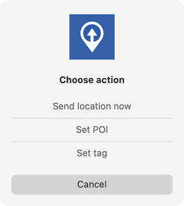

Location data
We support 4 distinct modes of location publication and region monitoring as pertains to data submitted to the MQTT broker by our apps:
- Quiet mode: Only manual location reports. Icon
[] - Manual mode: Manual location reports and automated reports with region monitoring. Icon
|| - Significant location change mode: Standard tracking mode with automated location reports. Icon
|> - Move mode: Frequent location
||>
All four modes work the same but behave slightly different on iOS or Android. In addition to region monitoring, iOS also supports location reporting based on iBeacons.
iOS
Move mode
In move mode, the app monitors location permanently and publishes a new
location as soon as the device moves locatorDisplacement meters or after locatorInterval seconds, whatever
happens first. locatorDisplacement and locatorInterval can be adjusted by the user in the systems settings for
OwnTracks. The defaults are 100m and 300 seconds (5 minutes).
The payoff is higher battery usage as high as in navigation or tracker app. So it is recommend to use move mode while charging or during moves only - hence the name.
Please note, move mode is active when the app is active (a.k.a in foreground).
Significant location change mode
iOS defines a Significant location change as traveling a distance of at least 500 meters in 5 minutes. This mode allows the app to run in background and minimize the power consumption.
This standard tracking mode reports significant location changes only (>500m and at most once every 5 minutes). This is defined by Apple and is optimal with respect to battery usage.
Examples:
- if you don't move, no new location is published - even if you don't move for hours. (Note, however, that the app will publish a ping-type message once in a while.)
- if you move at least 500 meters, a new location will be published after 5 minutes
- if you move 10 kilometers in 5 minutes, only one location will be published
Manual mode
The app doesn't monitor location changes in manual mode while in background. The user has to publish the current location explicitly via the UI. You use this if you want to (temporarily) avoid friends seeing where you are. Note that Region events triggered by entering or leaving Geo Fence or Beacon regions are still published automatically whilst in Manual mode.
Quiet mode
Same as Manual mode except that no region events are published.
Region monitoring
The app user may mark a previously manually published or manually created location as a monitored circular region by specifying a monitoring radius in meters. (See Regions.) The app will publish the location additionally every time the device leaves or enters one of the regions, and the published data contains an indication of whether the device is entering or leaving the region.
Region monitoring is not related to one of the location publication modes and works independently thereof. It is switched on when a region is setup with description and radius. To switch region monitoring off, all regions have to be unmarked (by setting their radius to 0).
Regions are shown on the map display in transparent blue or red circles. Red indicates the device is is within the region.
Tags and POI
On iOS, a user can set a point of interest (POI) during manual publish of a location or set a tag while for future location publishes. When tapping on "publish location" an action picker appears on which the user can choose to:

- Send location now. The current location is published, possibly enhanced with a previously set
tag. - Set POI. A user is asked to describe the POI (e.g.
delicious seafood) and the location is then transmitted with thepoiadded to the JSON payload. - Set tag. Users can enter a tag (e.g.
Spain 2023) which is added to the JSON of all subsequent location publishes, irrespective of the mode (i.e. this also works in significant changes mode, say), until the tag is removed.
iBeacon monitoring
The app user may mark a previously manually published or manually created location as a monitored beacon region by appending a beacon UUID to the region's name. The app will publish the location additionally every time the device leaves or enters one of the beacon regions, and the published data contains an indication of whether the device is entering or leaving the region.
Region monitoring is not related to one of the location publication modes and works independently. It is switched on when a region's name has a valid UUID appended to it.
If the device is within a monitored beacon region, the the beacon indicator is shown in red, otherwise blue meaning device is not in any iBeacon region.
There are 2 kinds of locations:
- an automatic location created when iOS detects a change of location
- a manual location created by the user
A manual location with a non-zero length remark (description) is a waypoint.
A waypoint's attributes are published when the waypoint is created or changed.
If a waypoint specifies a radius, a circular region is monitored for enter/leave events.
If a waypoint is not a circular region and the waypoint's description contains a valid iBeacon specification, a beacon region is monitored for enter/leave events.
If an enter/leave event occurs an event message is published with the type attribute set to cor bfor (circular region_or _beacon region). The message contains an event attribute specifying either enteror leave.
The description of the waypoint is added to the published event message.
| Automatic | Description | iBeacon | Radius | Event Message | /w Description | Waypoint Message |
|---|---|---|---|---|---|---|
| Y | n/a | n/a | n/a | N | N | N |
| N | N | n/a | n/a | N | N | N |
| N | Y | N | N | N | N | Y |
| N | Y | N | Y | c |
N | N |
| N | Y | N | Y | c |
Y | Y |
| N | Y | Y | N | b |
N | N |
| N | Y | Y | N | b |
Y | Y |
| N | Y | Y | Y | c |
N | N |
| N | Y | Y | Y | c |
Y | Y |
Android
Move mode
In move mode, the app monitors device location permanently. It requests a location fix every 10s (by default, configurable in the settings through moveModeLocatorInterval) in high power mode and publishes a new location as soon as it arrives.
This mode mostly relies on GPS location data and is hence the most accurate. The payoff is a higher battery usage. It is recommend to use move mode while charging or during periods that require highly accurate tracking while moving quickly.
The locatorDisplacement option is ignored in this mode.
Significant location change mode
This standard tracking mode is aimed at everyday usage for location tracking in the background. It uses a balanced power location request that gathers a new location fix every 15 minutes. Location data from other apps is reused and published as soon as it arrives.
This mode relies mostly on cell tower and WiFi location to conserve power to provide location data that is sufficiently accurate for most users.
In addition to the default settings, all location request parameters in this mode can also be changed. These parameters directly influence the raw location request that is send to the Android location API.
-
locatorInterval: The desired interval for active location updates."The location client will actively try to obtain location updates for your application at this interval, so it has a direct influence on the amount of power used by your application. Choose your interval wisely."
-
moveModeLocatorInterval: The requested location interval in move mode. -
locatorDisplacement: The smallest displacement in meters the user must move between location updates. Defaults to 0 and is anandrelationship with interval. Can be used to only receive updates when the device has moved.- This means if the user has not moved by more than the displacement value, the location will not be reported at
locatorInterval.
- This means if the user has not moved by more than the displacement value, the location will not be reported at
Manual mode
In manual mode, the app monitors device location with a low power location request. It uses the same interval configured for significant mode to receive low accuracy updates to use minimal battery power.
The user has to publish the current location explicitly via the UI. You use this if you want to (temporarily) avoid friends seeing where you are. Note that Region events triggered by entering or leaving Geo Fence are still published automatically whilst in Manual mode.
Remote reportLocation commands are ignored.
Quiet mode
Same as Manual mode except that no region events are published.